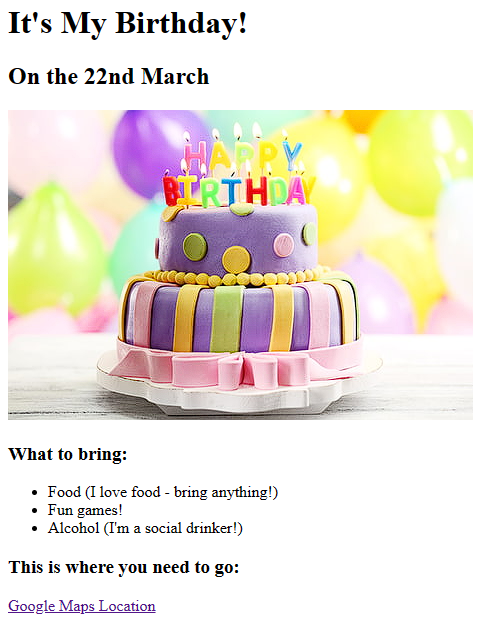

HTML & CSS (Intro - Intermediate)
Anime Ranking Project

Page utilizing simple HTML to create a personalized listing of my favorite animes.
Birthday Invite Project
As part of the 2023 Web Development Bootcamp with Dr. Angela Yu from the App Brewery, this website is the second installment of a 'mini-project' showcasing my gained knowledge of more HTML fundamentals. This page is where I "play" around with images and html lists.
Colors in Japanese

Mini project utilizing basic CSS properties to beautify the page from abstract white design. This project focuses a lot on the CSS color scheme.
Meme Page

Mini project in intermediate CSS that experiments on CSS dimensional properties such as height and width. Furthermore demonstrates the usage of other intermediate concepts such as padding, margin, and borders.